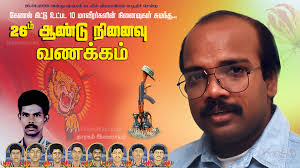

கேணல் கிட்டு வீர வரலாறு

உண்மைப் பெயர்: சதாசிவம் கிருஸ்ணகுமார்
இயக்கப் பெயர்: கேணல் கிட்டு
வீரச்சாவு தேதி: 16.01.1993
வீரச்சாவடைந்த இடம்: வங்காள விரிகுடா சர்வதேசக் கடல் பரப்பு
பிறப்பிடம்: வல்வெட்டித்துறை, யாழ்ப்பாணம்
வரலாற்றுக்குறிப்பு
யாழ்ப்பாண மக்களின் நெஞ்சங்களில் நீங்கா இடம் பிடித்த மக்கள் தளபதி கேணல் கிட்டு ஆவார். 1980-களில் யாழ் மாவட்டக் கட்டளைத் தளபதியாக இருந்து படை முகாம்களை முடக்கியவர். குண்டுவெடிப்பில் ஒரு காலை இழந்த பின், லண்டன் சென்று சர்வதேசப் பரப்புரைத் தலைவராக உயர்ந்தார். எம்.வி அகத் (MV Ahat) என்ற கப்பலில் ஆயுதங்களுடன் தாயகம் திரும்பும்போது இந்தியக் கடற்படையால் வளைக்கப்பட்டதால், கப்பலைத் வெடிக்க வைத்து கடலில் மாவீரரானார்.